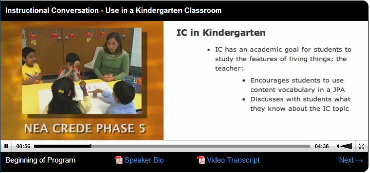

Identifying Student Interests
Expand/Collapse All Topic 1: Identifying Student Interests
Successful teachers integrate student interests in units and lessons, and in the design of the classroom environment.
This topic addresses the following competency:
The graduate creates age-appropriate, literature-rich environments that build on student interest and integrate core curriculum concepts
This topic highlights the following key concepts:
- strategies to discover students' interests
- designing lessons that match students' interests
- aligning lessons with standards and students' interests
Learning Activities
Consider the learning inventory that you identified in the "Identify: Reading Interest Surveys" activity. Answer the following questions:
- What do you like about the about the inventories that you found?
- What would you change?
- What are the advantages and disadvantages to using open response inventories?
- What would be the advantages and disadvantages of using a checklist type inventory?
- What changes would need to be made for different grade levels?
- Can you align the survey to your state standards or Common Core?
Create your own reading interest survey.
Estimated time to complete activity: 30 minutes
As read the linked material and lesson plan, in your journal, answer the following questions:
- What would you include in a study interest survey that incorporates concepts discussed in these sections?
- How could "Who I Am" activities help you determine students' interests?
- Would demographic statistics about the community, the city, and the school district be useful? How would you access such information?
Read the following sections of Creating Literacy Instruction for All Students, which provide different perspectives about planning instruction that interests students:
- pages 51–53 (starting at "Culturally Diverse Students") of chapter 2 ("Teaching All Students")
- pages 412–415 (starting at "Differentiating Instruction") of chapter 9 ("Reading and Writing in the Content Areas and Study Skills")
- "Exemplary Teaching: Including All Students" (p. 459) of chapter 10 ("Reading Literature")
Read the following lesson plan:
Estimated time to complete activity: 45 minutes
Read the following information from the University of Kansas about unit organizing routines and identify key components of unit plans:
Study the following web pages to complete the activity:
Estimated time to complete activity: 45 minutes
Think about topics that could be considered special interest topics for the grade level you would like to teach. Some may be based on culture and the environment and guided by the content area subjects (e.g., history or science topics), and others will just be based on things the students enjoy (e.g., planets, horses, endangered species, rockets, presidents, cooking, heroes, sports).
Go to your state standards or the Common Core standards and find at least one standard for the grade level you would like to teach that would incorporate a specific interest. Complete the following using the standard you selected:
- Create an outline for an integrated unit based on the topic you have chosen. Use The Unit Organizer
- Identify how you will include reading, writing, and at least one other content area (i.e. science, math, or social studies) in your unit.
- Select materials for the unit (e.g., reading selections, videos, artwork).
Estimated time to complete activity: 75 minutes
As you read the linked article, complete the following:
- Determine which state or Common Core standards align with this student interest topic.
- Explain how the information in the article could be used to support each standard you identified.
Read the following article:
Estimated time to complete activity: 60 minutes
As you read the linked lesson plan, complete the following:
- Identify a topic that would be of interest to students in grades 6 to 8 (use the list already created in your notebook as a resource).
- Answer the following questions:
- How will you have to change the materials presented to the students in the paper bags as the lesson topic changes?
- Will you need to add any research materials?
- Will the instructional sequence change?
Read the following lesson plan:
Estimated time to complete activity: 40 minutes
Use the unit outline you created in the activity "Synthesize: Planning Around Special Interests" to create a standards-based lesson plan based on the student interest topic you chose for your paper bag skit lesson.
Access
MyEducationLab and select MyEducationLab for Literacy Methods: Course Resources: Lesson Plan Builder. Use the "Lesson Plan Builder" for this activity.
Estimated time to complete activity: 90 minutes
Inviting Classrooms
Expand/Collapse All Topic 2: Inviting Classrooms
This section focuses on creating inviting classrooms that address student interests and provide exposure to varied literature.
This topic addresses the following competency:
- Competency 669.1.3: Literature-Rich Environments
The graduate creates age-appropriate, literature-rich environments that build on student interest and integrate core curriculum concepts
This topic highlights the following key concepts:
- literature-rich environments that focus on students' interests
- standards that align with literature-rich environments and students' interests
Learning Activities
As you read the linked material, answer the following questions:
- What are the key elements that define a literature-rich environment?
- Why is a literature-rich environment important for reading development for students of all ages?
- How do you develop a literature-rich environment in your classroom?
Read the following web pages:
Estimated time to complete activity: 30 minutes
As you read the linked material, complete the following:
- In your journal, record the types of text that are recommended to support students in the classroom.
- Describe how you can use a variety of materials to develop students' foundational knowledge for a given subject.
- Think back to the integrated unit you outlined previously and identify additional materials you would need to make the unit a literature-rich, standards-based unit.
Read the following pages from Creating Literacy Instruction for All Students:
Estimated time to complete activity: 30 minutes
Research your state standards or the Common Core Language Arts standards. Identify standards that address literacy-based teaching, and then complete the following:
- List ways that you could support each standard you identified by creating a literature-rich environment.
- Think about what you have learned in this course and answer the following questions:
- What does a literature-rich classroom look like for you?
- Thinking about your walls, your technology, and your classroom library, how will you inspire your students to learn to read and read to write in this environment?
Estimated time to complete activity: 45 minutes
As you review the linked material, complete the following:
- In your notebook, make a sketch of your ideal literature-rich classroom.
- Identify areas, walls, equipment, and furniture.
- Leave room on the sketch to add items as you learn about them.
Review the following pages of Creating Literacy Instruction for All Students:
- pages 53–54 (starting at "A Research-Based Approach to Cultural Diversity") in chapter 2 ("Teaching All Students") https://lrps.wgu.edu/provision/9685894
- pages 412–413 (starting at "Differentiating Instruction") in chapter 9 ("Reading and Writing in the Content Areas and Study Skills") https://lrps.wgu.edu/provision/9686658
- pages 497–499 (starting at "Using What you Know") in chapter 12 ("Writing and Reading in the Creating Literacy for All Students") https://lrps.wgu.edu/provision/9686913
Note: This information will be used for your student project assessment. Review the requirement for the project and save your work in a Student Project Assessment file.
Estimated time to complete activity: 45 minutes
As you review the linked material, create a to-do list to acquire all of the items you will need to create a literature-rich environment for the lesson plan you created in the activity "Create: A Standards-Based Special Interest Group Lesson Plan."
Review the following chapters of Creating Literacy Instruction for All Students to learn about texts, print materials, technologies, strategies, and instructional materials for classroom use:
- chapter 11 ("Approaches to Teaching Reading") https://lrps.wgu.edu/provision/9686834
- chapter 12 ("Writing and Reading") https://lrps.wgu.edu/provision/9686834
Estimated time to complete activity: 30 minutes
Learning Centers
Expand/Collapse All Topic 3: Learning Centers
Learning centers can provide practice and reinforcement of skills. They can enrich learning and be adapted to student interests and diversities.
This topic addresses the following competency:
- Competency 669.1.3: Literature-Rich Environments
The graduate creates age-appropriate, literature-rich environments that build on student interest and integrate core curriculum concepts
This topic highlights the following key concepts:
- using centers to create to create literature-rich environments
- creating literature-rich centers that focus on students' interests
- addressing the instructional needs of diverse students when creating learning centers
Learning Activities
As you read the linked material and review the linked web pages, complete the following:
- Using the technology links on page 491 of the textbook, explore several of the listed resources.
- In your notebook, identify ways to use learning centers to introduce literacy into your classroom.
- Add new ideas to the classroom sketch you created in "Synthesis: Literature-Rich Environment."
Read the following pages of Creating Literacy Instruction for All Students:
Review the following web pages to complete this activity:
Estimated time to complete activity: 25 minutes

As you watch the linked Educational Impact videos, complete the following:
- For videos 4–10, answer the following questions:
- What key areas did the teacher in the video focus on when preparing the centers for her students? Why did she choose these areas?
- How were the centers introduced to the students?
- Based on the information about center introductions (briefings), would you have added different activities or materials to the centers? Explain your ideas.
- Was the information effective to explain the expectations to the students?
- For video 11, answer the following questions:
- How do your responses compare to the teacher's reflection?
- What information did you identify that was the same?
- What information did you miss or not think about until you heard her reflection?
- How can this help you in planning instruction?
Watch videos 4–11 from the following topic of Educational Impact: Effective Teaching in Diverse Classrooms:
- Module 7: Topic A ("Overview of Phase 5: All 5 Standards Working Together") https://lrps.wgu.edu/provision/15922495
Estimated time to complete activity: 30 minutes
Using the lesson you created for student interests, or lesson ideas presented in the article Focus on Fire Fighters https://lrps.wgu.edu/provision/15866549 that you read in the activity "Synthesize: Student Interest Materials and Alignment with Standards," develop at least three learning centers to teach or reinforce the standards for the lesson. Answer the following questions:
- What specific standards will the centers support?
- What materials will be needed? Remember to include items to support the literature-rich environment you have been creating
- How will you introduce the centers to students?
- Where in the classroom will the students participate in these centers based on the classroom sketch you have been creating?
Estimated time to complete activity: 45 minutes
Review all of the videos from the following topic of Educational Impact: Teaching the ESL Learner:
- Module 2: Topic A ("Introduction") https://lrps.wgu.edu/provision/6941461
- Module 2: Topic B ("Strategies for ESL Teachers") https://lrps.wgu.edu/provision/6935932
Estimated time to complete activity: 30 minutes
Using the centers you designed in the activity "Synthesis: Creating a Learning Center" and information learned in the in Educational Impact: Teaching the ESL Learner, differentiation your centers to meet the needs of ESL learners.
Estimated time to complete activity: 30 minutes
Tooltip content goes here.